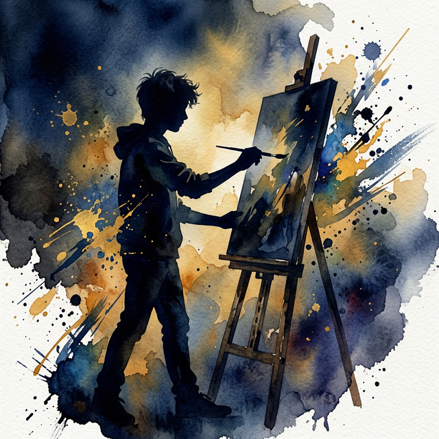

A curated collection of works from my middle and high school years, showcasing a diverse exploration of painting, drawing, digital media, sculpture, and architectural design.
About the Artist

Hi, I'm Oliver Tong
I'm a high school student and aspiring artist based in New York City. My passion for art ignited in early childhood — scribbling crayon landscapes on every available surface — and has grown into a dedicated pursuit spanning painting, drawing, sculpture, printmaking, digital art, and architectural design.
From the first time I picked up a pencil and tried to capture the world around me, I knew art would be a central part of my life. Over the years I've moved from simple sketches to award-winning works that explore the human condition — joy, sorrow, resilience, and connection.
I fell in love with colors before I could even write my name. Coloring books turned into freehand drawings on scrap paper, napkins, and the margins of homework sheets. My parents noticed early that I could sit for hours completely absorbed in drawing.
Middle school opened doors to sculpture, colored pencil, and poster design. I created the "AI Hand" sculpture exploring technology and humanity, designed Constitution Day posters, and began developing a personal artistic voice.
My sophomore year was a turning point. "The Smiling Worker" and "The Multi-Tasker" each earned a Gold Key at the NYC Scholastic Art & Writing Awards — my first major recognition — fueling my commitment to portrait art and human storytelling.
I expanded into printmaking, mixed media, acrylic oil painting, and even AI-assisted digital art through my seminar research. Continued Scholastic recognition, exploring architectural design, and building this very portfolio website are all part of my ongoing creative evolution.
My Journey
Get in Touch
If you would like to own a high-quality print of any of these artworks, please reach out via the contact form below.
If you’re interested in a similar web site design for your own project, I’d be happy to discuss how I can help you create one.